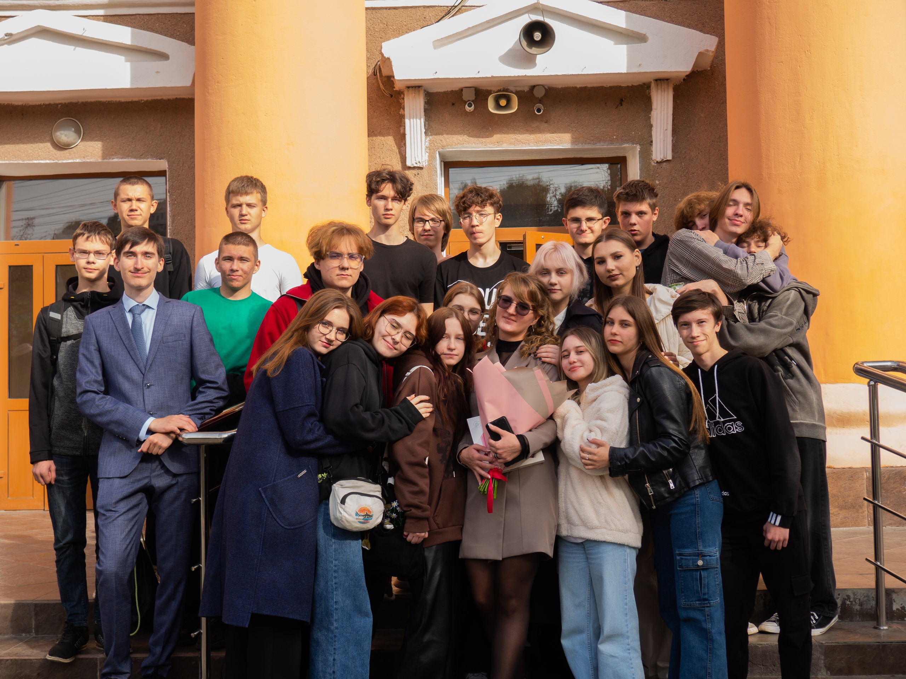

В 2013 году я пошла учиться в школу №58 г.Пензы, закончила 9 классов,и сейчас я на 2 курсе колледжа ГАПОУ О ПКИПТ(ит-колледж) на веб-разработчика.В школе я была ударницей,принимала участие в различных проектах с классом и занимали призовые места. Когда я поступила в колледж по-началу было страшновато,потому что новый коллектив,новые преподаватели, много чего нового сразу, поэтому было тяжеловато, но сейчас,когда я более менее привыкла к новой сфере своего обитания стало полегче.